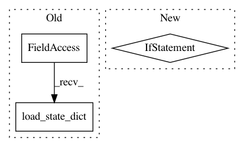

4fb281b7f9f5e549e29addd5641eac007c5ed385,autokeras/pretrained/face_detector.py,FaceDetector,__init__,#FaceDetector#,276
Before Change
if torch.cuda.is_available():
self.onet_detector.load_state_dict(torch.load(onet))
else:
self.onet_detector.load_state_dict(torch.load(onet, map_location=lambda storage, loc: storage))
self.onet_detector = self.onet_detector.to(self.device)
self.onet_detector.eval()
self.min_face_size = 24
After Change
def __init__(self, **kwargs):
super().__init__(**kwargs)
pnet, rnet, onet = (torch.load(path, map_location=lambda storage, loc: storage) for path in self.local_paths)
self.pnet_detector = PNet()
self.pnet_detector.load_state_dict(pnet)
In pattern: SUPERPATTERN
Frequency: 3
Non-data size: 3
Instances
Project Name: keras-team/autokeras
Commit Name: 4fb281b7f9f5e549e29addd5641eac007c5ed385
Time: 2019-02-09
Author: jhfjhfj1@gmail.com
File Name: autokeras/pretrained/face_detector.py
Class Name: FaceDetector
Method Name: __init__
Project Name: microsoft/nni
Commit Name: 73b2221b5eb4fd21802e6bf41e21d5df8ef9bf2c
Time: 2019-11-22
Author: v-yugzh@microsoft.com
File Name: src/sdk/pynni/nni/nas/pytorch/darts/trainer.py
Class Name: DartsTrainer
Method Name: train_one_epoch
Project Name: microsoft/nni
Commit Name: 73b2221b5eb4fd21802e6bf41e21d5df8ef9bf2c
Time: 2019-11-22
Author: v-yugzh@microsoft.com
File Name: src/sdk/pynni/nni/nas/pytorch/darts/trainer.py
Class Name: DartsTrainer
Method Name: _compute_hessian